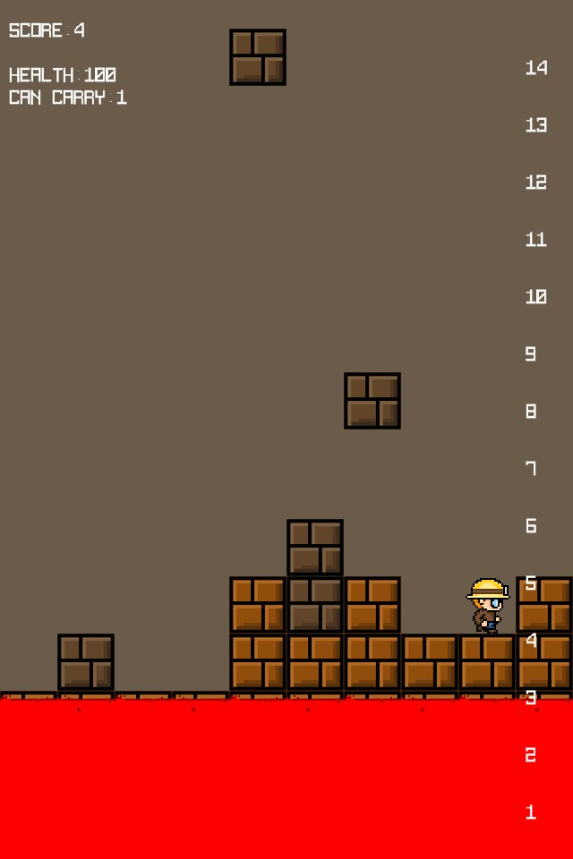

The Floor is Lava

It needs a keyboard.
Controls
- ← →
- Step one block
- ↑
- Jump one block
- Z (hold)
- Mine the block you're facing
- Space
- Put a block you're carrying down where you're facing
- ↓
- Put one down under you: jump first
- Ctrl + arrow
- Turn without moving
- Enter
- Play again after Game Over
Blocks drop from the sky (a red ! warns you where), the lava keeps rising, and it speeds up as you go. Dig blocks loose with the pickaxe, grab what falls out, and stack it under your feet to stay on top. You can carry three at a time. Apples heal you, and standing inside a falling block doesn't.
My final project for my game programming class, November 2017, written in Java straight on top of OpenGL with no engine. That can't run in a browser, so this is the same game rebuilt line for line from the original, with its own sprites. The music is off.